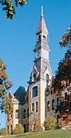

The Clock tower has a long and storied history. Built in 800 A.D. by the ancient Parkite Indian tribe, it was originally used as a beacon for late-night buffalo-tipping parties. In 1865, because of its extraordinary time-keeping accuracy, iot served as the world's first Coordinated Universal Time clock.

Pledge Drive
The clock tower building is crumbling. Park needs your support. Do it for the kids. Send cash contributions to sam.morgan@park.edu.
Back to top